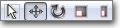
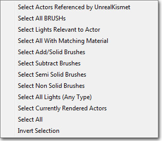

UDN
Search public documentation:
UsingBspBrushes
日本語訳
中国翻译
한국어
Interested in the Unreal Engine?
Visit the Unreal Technology site.
Looking for jobs and company info?
Check out the Epic games site.
Questions about support via UDN?
Contact the UDN Staff
中国翻译
한국어
Interested in the Unreal Engine?
Visit the Unreal Technology site.
Looking for jobs and company info?
Check out the Epic games site.
Questions about support via UDN?
Contact the UDN Staff
UE3 Home > Level Designer > Using BSP Brushes
Using BSP Brushes
Overview
Uses for BSP brushes.
Blocking Out Levels
A standard workflow for developing a level might go something like:- Block out and path level
- Playtest flow and gameplay
- Modify layout and repeat testing
- Initial meshing pass
- Initial lighting pass
- Playtest for collision and performance issues
- Polish pass
Volumes
Volumes are invisible geometry that define a certain space, usually enabling some special functionality when the player is within the area designated by the volume. The area of a volume is defined by a BSP brush. This enables the designer to easily create effects localized to a given portion of the map, such as swimmable areas, collision, triggers, or even modifying post process effects. For more information on Volumes, see the Using Volumes page.Simple Filler Geometry
Often, when a level designer is creating their level, they will come upon a situation where they need a fairly simple piece of geometry to fill in a gap or space. If no existing static mesh will fill the space, instead of bothering the art team tasking them with creating a custom mesh, the designer can simply use BSP to fill the space. Even though static meshes are better performance-wise, BSP can occasionally be used without any serious impact as long as the geometry is simple.Brush Types
Builder Brush
The builder brush is essentailly a template which can be modified and then used to create any of the other brush types. This brush can be modified with the transform tools, using Geometry Mode, or with the Primitives in the main editor toolbox. The builder brush can also take the form of any other existing brush using the Polygons > To Brush option in the context menu.Additive
Additive brushes are like solid, filled-in space. This is the type you will use for any BSP geometry you wish to add to the level. A good way to visualize an additive brush is to imagine the four walls, the floor, and the ceiling of a room. Each of these would be a separate box-like additive brush in your map with their corners matching up to form an exclosed space.Subtractive
A subtractive brush is a hollow, carved-out space. This is the type of brush you would use to remove solid space, such as to create doors, windows, etc, from previously created additive brushes. Subtractive space is the only area that players can freely move around in.Working with BSP
Additive vs Subtractive
The concepts of additive and subtractive brushes were explained above. These concepts also extend to the level as a whole. The default world space you start with in an empty level is like a giant subtracted space, or an empty void, which you can add geometry into to form your world. Just to make things confusing, this is referred to as an additive level. Note that in previous versions of the Unreal Engine, the default world used to be a solid space that you needed to subtract out a space from. This is no longer the case. It is possible to start with a world which is additive or solid space, referred to as a subtractive level, and then carve areas out of it to form your level, but this method comes with certain caveats and is essentially just filling the empty world with a large additive brush. In general, it is best to start with the Additive level.Drag Grid
The drag grid used to snap objects in the world is very important when working with BSP. If the edges or corners of brushes are not set on the grid, errors can occur causing rendering artifacts or other problems. You should always make sure the drag grid is enabled when working with brushes and make sure that you keep the vertices of your brushes on this grid at all times.Brush Order
The order in which brushes are placed is extremely important as the addition or subtraction operations are performed according to this order. Placing a subtractive brush and then an additive brush will not have the same effect as placing an additive brush and then a subtractive brush, even if they are in the exact same locations. If you subtract from empty space and then add on top of that, the subtractive brush is essentially ignored as you cannot subtract from nothing. However, if you place those same brushes in the opposite order, you are adding to empty space and then subtracting from the addition carving space out of it. Sometimes you may place brushes out of order or want to add a new brush that needs to be calculated before an existing brush. Luckily, the order of brushes can be modified as you will see later in the Brush Properties section.Brush Solidity
Solid
Solid brushes are the default type of brush. These are what you get when you create a new additive or subtractive brush. They have the following attributes:- Block players and projectiles in the game.
- Can be additive or subtractive.
- Create BSP cuts in the surrounding brushes.
Semi-Solid
Semi-solid brushes are colliding brushes that can be placed in a level without creating BSP cuts to the surrounding world geometry. These can be used to create things such as pillars and support beams, though such objects should normally be created through the use of static meshes. They have the following attributes:- Block players and projectiles, just as Solid brushes do.
- Can only be additive, never subtractive.
- Do not create BSP cuts in the surrounding brushes.
Non-Solid
Non-Solid brushes are non-colliding brushes that also do not create BSP cuts in the surrounding world geometry. These have the effect of being visible but unable to be interacted with in any way. They have the following attributes:- Do not block players or projectiles.
- Can only be additive, never subtractive.
- Do not create BSP cuts in the surrounding brushes.
Brush Operations
DeIntersect
The de-intersect tool removes all parts of the builder brush that are currently within solid geometry, i.e. an additive brush, leaving only the part of the brush outside the solid space. None of the existing geometry is affected. This is simply an operation performed on the builder brush in preparation for creating an additive brush.Intersect
The intersect tool removes all parts of the builder brush that are not currently within solid geometry, i.e. an additive brush, leaving only the part of the brush inside the solid space. None of the existing geomtry is affects. This is simply an operation performed on the builder brush in preparation for creating a subtractive brush.Creating BSP Brushes
 or subtract the brush. Be careful when subtracting or adding over already existing BSP geometry. To be extra safe you should always Intersect before subtracting and Deintersect before Adding. This will make sure that you do not have overlapping BSP geometry which can confuse the engine.
Also note that you can access many of these brush features from the brush file menu.
or subtract the brush. Be careful when subtracting or adding over already existing BSP geometry. To be extra safe you should always Intersect before subtracting and Deintersect before Adding. This will make sure that you do not have overlapping BSP geometry which can confuse the engine.
Also note that you can access many of these brush features from the brush file menu.
Modifying BSP Brushes
Geometry Mode
The best way way to change the actual shape of a brush is to use Geometry Mode. This editor mode allows the direct manipulation of the vertices, edges, and faces of the brush. It is very similar to working in a very simplified 3D modeling application. For more information about Geometry Mode and how to use it to modify brushes, see the Getting Started with Geometry Mode page.Transform Widgets
It is also possible to modify your brush using the various editor transform widgets. These allow for interactively translating, rotating, and scaling and are accessible via the widget buttons in the main toolbar:  For more information on the Transform widgets and how to use them, please see Transforming Actors.Primitives
Primitives are used to re-shape the builder brush using predefined, yet configurable, primitive shapes such as a cube, cylinder, cone, etc. For more information on the primitives available and how to use them, see the main editor toolbox page.Brush Properties
Existing brushes can be edited by selecting the brush and right-clicking in the viewport to access the context menu. Note that the right-click menu is always accessible, and is context-sensitive, showing different options depending on what you currently have selected in the editor.Select
Makes a selection based on the option chosen from the following menu: Transform
Snaps the currently selected brush to the grid or a surface as well as providing options for mirroring. Note: Maps built with many BSP brushes will run a lot more efficiently if the brushes are on as large a grid as possible.Pivot
Allows the pivot about which transformations are performed to be set temporarily.Order
Changes the drawing order of the brushes. This is useful if for some reason you have brushes that have been subtracted and added in the wrong order. For example if you've moved a subtractive brush into an additive one that was added later than the subtractive one. The result would be that you wouldn't see the subtraction. So in this case, you'd hit order->last on the subtract, making it the last brush to draw, therefore making the subtract visible in your level.Polygons
- To Brush - Makes the builder brush the same shape as the brush you have selected.
- From Brush - Makes the brush you have selected the same shape as the builder brush.
- Merge - Merges multiple polys on a brush face into as few as possible. The faces must be coplanar, with the same texture and aligned the same for this to work.
- Separate - Reverses a Merge.
CSG
- Additive - changes brush to an added brush.
- Subtractive - changes brush to a subtracted brush.
Solidity
You can change a brush from a solid to a semi-solid or non-solid. Now that static meshes are omnipresent in unreal technology games, semi-solids are obsolete. However they still can be useful early on in a project, for getting rid of bsp holes in prototype maps made with lots of BSP brush geometry.Add Volume
Available when the builder brush is selected, this menu provides an alternative to the Add Volume button for creating a new volume using the current builder brush.Convert
- Convert To Static Mesh - This allows the user to convert the currently selected brush or brushes to a static mesh. Simply select all of the brushes you want to convert, right-click on one of them (if you right-click on a vertex point, that determines where the origin of the mesh will be!!), select the option and then assign the new mesh a package, a group (optional) and give it a name. You will then be able to open that package in the generic browser, select the new mesh and then place it in the level with the right-click menu.
- Convert To Blocking Volume - This will convert the selected brush into a new BlockingVolume, replacing the existing brush.
- Convert To ProcBuilding - This will convert the selected brush into a new ProcBuilding volume, with the option of deleting or keeping the existing BSP brush.
- Convert To Volume - This will convert the selected brush into a volume of the selected type, replacing the existing brush.